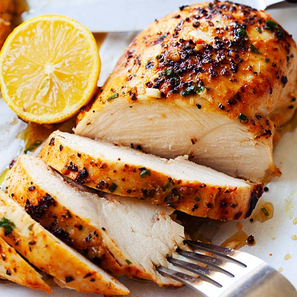
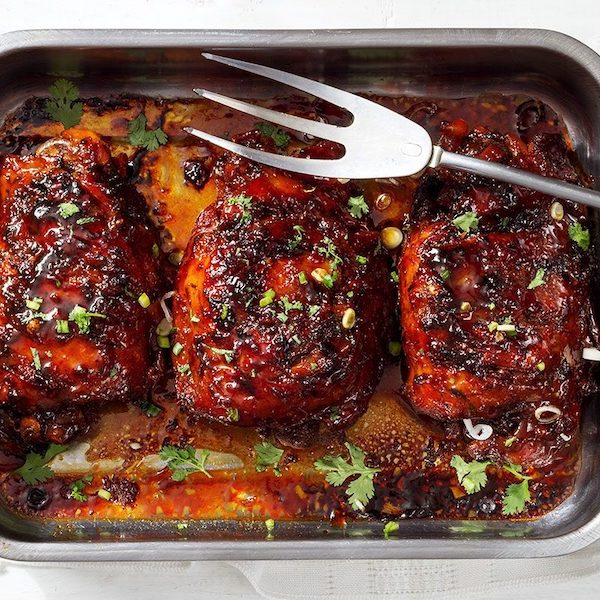

Welcome to Mad Recepies, here you can find easy to cook bake-recepies for a healthy life. You will not need any special cooking utensils, just a couple of bake trays and an oven.
Turn a bland chicken breast into an incredibly full flavored dish.

Turn a bland chicken breast into an incredibly full flavored dish.

Broccoli as well can taste well with a little bit of vinegar.